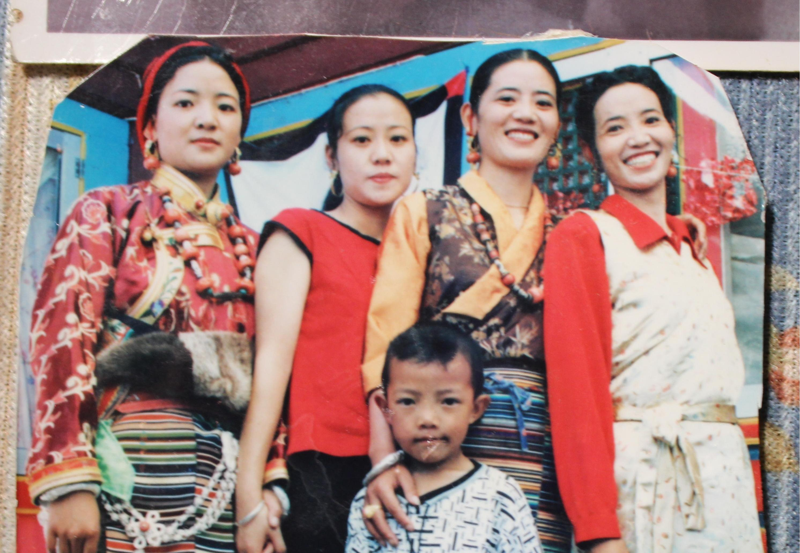
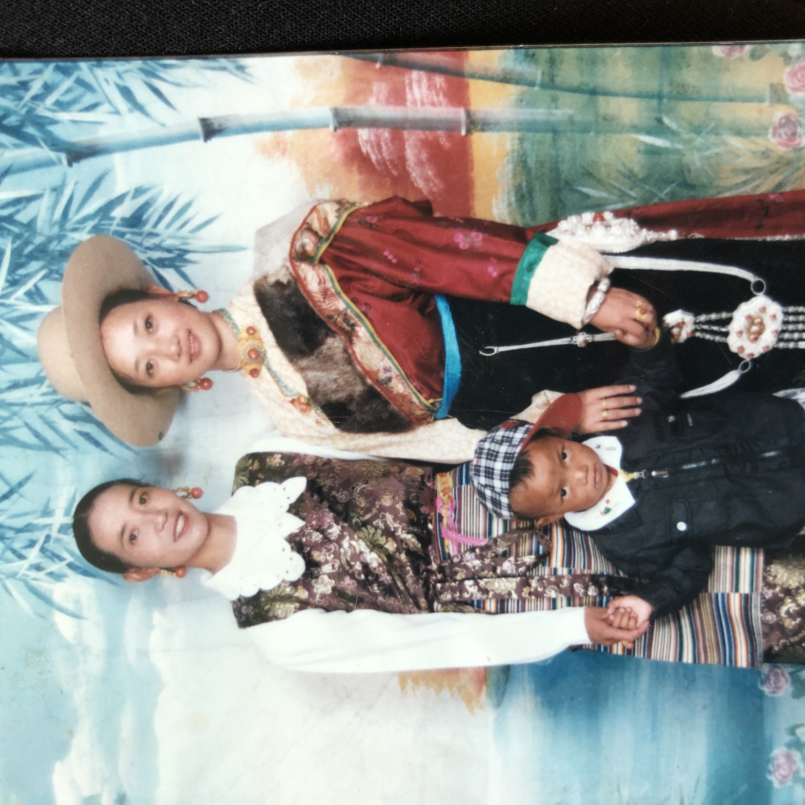

Click to play video
These are my 80 years old grandparents
Because of their legibility
All I try to do is make them as comfortable as possible during the interview
In the process, I interviewed them about their views on the change of costumes.
I realized that despite the rapid development of the times, these old people still want to hold on to and pass on the fundamentals of the dress culture.

This 2006 photograph captures my aunt's wedding, where two generations of style converge.
On the left, the bride embodies Tibetan heritage in a crimson robe adorned with golden auspicious symbols, her turquoise and coral beads echoing ancient mountain whispers.
To the right, modernity speaks through a sleek ivory gown, its clean lines softened by a traditional patterned sash—a bridge between eras.
Together, these outfits trace a silent dialogue: reverence for roots, embrace of change, and the bold fusion that redefines tradition.

This 1998 photo freezes a moment of rebellion. My two aunts stand as pioneers, their outfits weaving audacity into tradition.
The woman on the left commands attention in a Tibetan-inspired gown where snowpeak-white lace cascades like glacial streams—a stark departure from solemn brocades. Delicate floral patterns bloom across the fabric, mirroring the first wildflowers piercing through Himalayan frost.
Embody a quiet revolution: lace becomes a manifesto and heritage transforms under the needle of youthful defiance.

Leave Your Comments